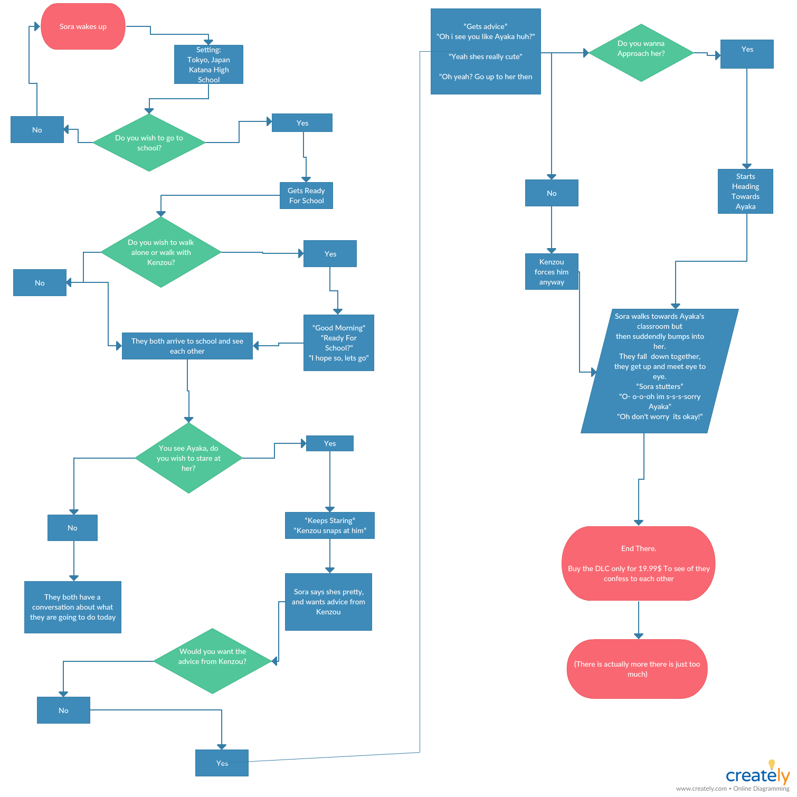

Python Text Adventure (Repl.it Project)
A former 10th grade student from Katana High School, Sora, is your normal teenage boy. Hes the usual, nothing really special about him. He goes to school and gets decent grades. Sora is a pretty shy kid, he is not really good at social interactions. Which is also the reason why hes never been in a relationship. During passing periods in school, there is a girl that walks by and has everyone surrounding her. Meet Ayaka, a cheerful famous student in school. She is the same age as Sora, 16 years old. When Sora sees her, he finds her really attractive but forgets about her when hes heading to his next period. He sees Kenzou his best friend and starts to talk about a girl he saw that he found really attractive.
Kenzou and Sora have been friends for years and knows hes a big help. Hey man I wanna try and get a chance with this girl, I feel like its low, what should I do? Sora says. Just show off your gaming skills lmao Kenzou says. Sora just sits there in pause looking at Kenzou. Very funny man. Sora says. Okay, well just try to talk to her, like start a conversation even though you cant. Kenzou says. Okay you know what I will, all I have to do is say hi easy. Alright man. After shortly when the period ends, Its lunch time. Out of nowhere, Ayaka is walking alone. Sora, not looking, bumps into her and they both look into each other. (End here, but theres more to come)
Video Narration
Welcome to my replit game a series of code that follows each answer you choose. This is a decision game. Whatever answer you choose takes you to a different path. You can follow that path or if you want go another direction and follow that one. Its also a good story to read too.

Written Response
While this was a collaboration project I myself have brainstormed the idea of the story, while my partner and I worked on the coding. There were many problems when writing out this code. For example, the basic codes were simple it was just the indent that was the problem. Some line of code had to be alined together or else it would not work. We also had to find ways to make sure code will follow other codes. Like this will trigger to go to the other lines of code. The whole process was easy, we just needed help for the spacing and the indenting part of it.